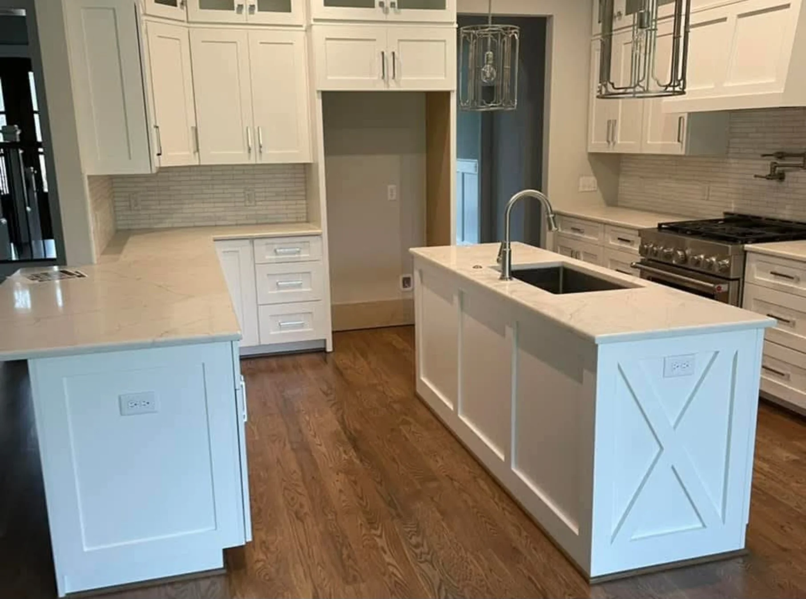

HomeProject gallery
PROJECT GALLERY
Completed
cabinet work.
Completed kitchens, bathroom vanities, built-ins and pieces from the CNC shop. Browse the photographs below.
COMPLETED WORK
Browse by space.
Browse the projects by category. More installations will be added as they are photographed.
PLAN A PROJECT
See a detail
that clicks?
Send a reference photo, approximate dimensions and a description of the work. We can review the scope.
Project inquiry
PROJECT INQUIRIES
Looking for something new for your project?
Get in touch with a few details about the vision, we've made tougher happen.